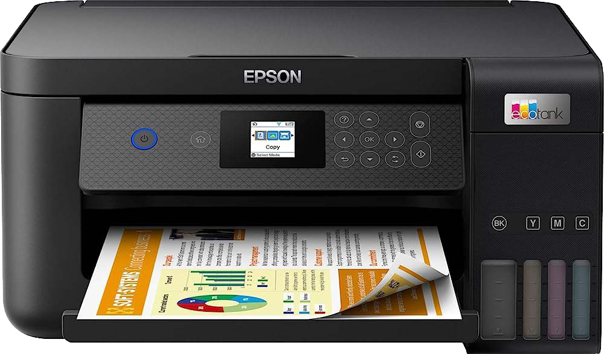
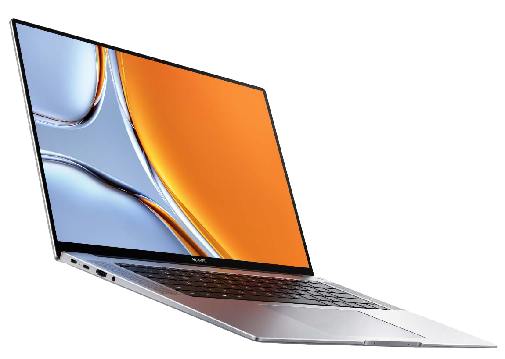
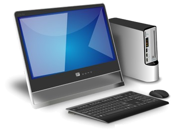
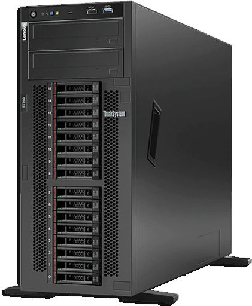

About Printer
A printer is an external hardware output device that takes the electronic data stored on a computer or other device and generates a hard copy. For example, if you created a report on your computer, you could print several copies to hand out at a staff meeting.

About Laptop
A laptop, sometimes called a notebook computer by manufacturers, is a battery- or AC-powered personal computer (PC) smaller than a briefcase. A laptop can be easily transported and used in temporary spaces such as on airplanes, in libraries, temporary offices and at meetings.

About Desktop
The desktop is a basic element of a personal computer that represents different types of objects, including project folders, reference sources, drawing tools, documents, writing tools, phone books, telephones.

About server
A server is a computer program that can be accessed remotely over a network to provide resources and services to another computer program. The computing device that this type of program runs on may also be referred to as a server.
About server
A server is a computer program that can be accessed remotely over a network to provide resources and services to another computer program. The computing device that this type of program runs on may also be referred to as a server.
About server
A server is a computer program that can be accessed remotely over a network to provide resources and services to another computer program. The computing device that this type of program runs on may also be referred to as a server.
About Desktop
The desktop is a basic element of a personal computer that represents different types of objects, including project folders, reference sources, drawing tools, documents, writing tools, phone books, telephones.
About Printer
A printer is an external hardware output device that takes the electronic data stored on a computer or other device and generates a hard copy. For example, if you created a report on your computer, you could print several copies to hand out at a staff meeting.
Dr. Shroff Charity Eye Hospital
© Established in 1914, Dr. Shroff’s Charity Eye Hospital (SCEH) is one of the oldest and largest eye care institutions in the country. It is known globally not just for its comprehensive eye and ENT care but also for its impacting work among communities, research work and publications, as well as the education and training programmes it runs for the healthcare fraternity.